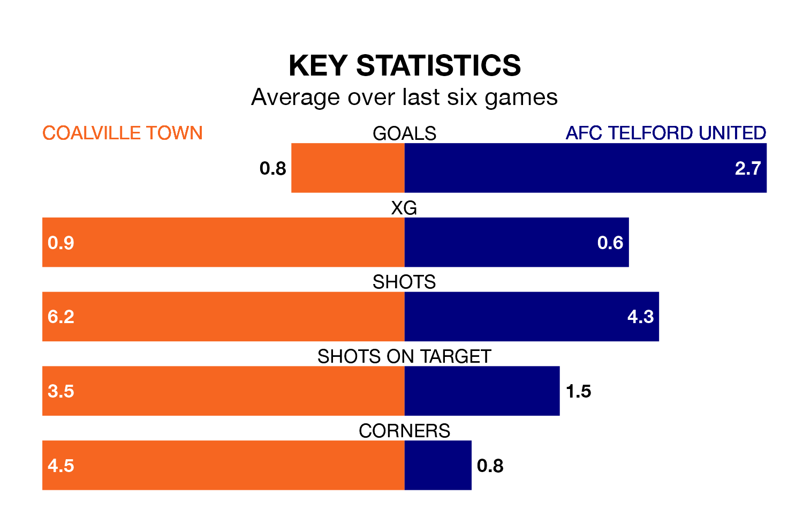

AFC Telford United visit Coalville Town at the Owen Street Sports Ground on Saturday on the back of five consecutive wins in the Southern League Premier Central.
Telford United have picked up 16 points from their last six games, and they face a Coalville side who lost their last match, and have collected six points from the last possible 18.
With 67 goals in 38 games so far this season, Coalville are scoring more than average in the league with 1.8 goals per game. And they are conceding at an average rate, letting in 56 goals at a rate of 1.5 per game.
Telford United are also above average scorers, with 1.7 goals per game, compared to a league average of 1.5. They have conceded 0.8 goals per game.
The Bucks are third in the table after 40 games, of which they have won 22 and drawn 11, earning 77 points.
Town are nine places behind the away team in 12th, with 14 wins and nine draws putting them on 51 points.
Over the last two years, Coalville and Telford United have played each other twice. Coalville won one of them and they drew the other.
Their last meeting was on January 23, when they played out a 1-1 draw.
Coalville's last match was on April 20, a 1-0 loss against Kettering Town.
Telford United beat Berkhamsted 6-2 last time out, also on April 20.
Updated: 07:59 (UTC), 26/04/24